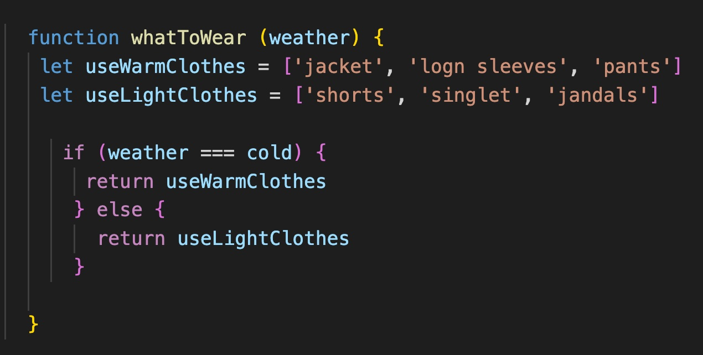

JS, HTML and CSS, behind the scene
JavaScript is like the special effects team behind a movie. Just as the special effects team adds interactivity and dynamic behavior to a movie, JavaScript adds interactivity and dynamic behavior to a web page, creating special effects and modifying the page in response to user actions.
HTML is like the script of the movie. Just as the script provides the basic structure and content of a movie, HTML provides the basic structure and content of a web page, defining the elements that make up the page, such as headings, paragraphs, images, and links.
CSS is like the wardrobe and makeup team of the movie. Just as the wardrobe and makeup team adds visual style and layout to the actors, CSS adds visual style and layout to a web page, controlling the look and feel of the page, such as colors, typography, and spacing.
What is control flow and loops?
Control flow refers to the order in which statements are executed. Control flow determines the direction of the program's execution based on certain conditions, such as conditional statements or loops.
For example, you have to decide what to wear based on the weather. If it's cold outside, you'll wear warm clothes, and if it's hot outside, you'll wear lighter clothes.

What 's the DOM?
The DOM, or Document Object Model, is a programming interface for web documents. It represents the HTML or XML document as a tree-like structure, where each node in the tree represents an element, attribute, or text content in the document. For each HTML tag that you create, the DOM creates a Node. We only see the tag 'p' but behind that is a lot of information (all the options and things that we can do with the tag). When you manipulate the DOM using JavaScript, you are essentially modifying the properties and methods of the DOM objects that correspond to each node in the tree.
Arrays and Objects
Arrays and objects are both used to store and organize data, but they have different structures and ways of accessing their data.
| ARRAY | OBJECT |
|---|---|
| - Ordered collections of values | - Unordered collections of values |
| - Use numerical indices to access their values | - Use key names |
| - Use square brackets [ ] | - Use curly braces { } |
| - Ordered lists of data | - Inlcude, arrays, functions, string, etc. |
| - Have built-in methods for manipulating their data, such as push, pop, shift, and unshift, | - Do not have built-in methods for manipulation, but can be modified using assignment or the Object.assign method. |
Why do we use functions?
Simple, to avoid writing the same code over and over again. A function is a block of code and can be called when you need it. They allow us to recycle code. Functions can take parameters, return values, be assigned to variables, and be defined inside other functions.